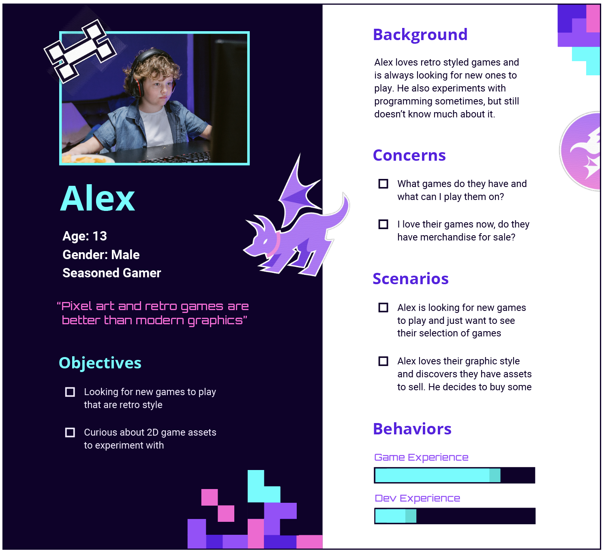

Personas
One of the requirements for this project was to make at least two personas who would be accessing the website. Below are the two that I thought would be fitting for this brand.


Branding and website created in Spring 2021.
This was my final project for my Graphic Design 2 course at BW. The name Purple Dog was randomly assigned and I was tasked with developing a brand and then specifically assigned a portfolio website.
I know the name Purple Dog can be taken in a lot of directions, but when I was tasked with developing a portfolio website to compliment it, I had some more limited options. I suppose a dog fur-dying salon with photos of puppy clients could have been one possibility.. However, my interests in gaming leaned me towards the direction of a gaming studio instead.
In fact, when I heard the name originally, my mind immediately went to Spyro (he's got some dog-like qualities right?) and you likely can see the Spyro inspiration in the logo that I designed. I wanted to include some dragon qualities (like wings) because the color purple relates to dragons in my head (OK. maybe it's just Spyro..) Additionally, I liked the idea of adding the fantasy touch to a brand that's meant to be a game studio.
With the logo, I had to play around with a lot of different typefaces. I find that I often struggle with choosing typography for logos, especially for an industry like gaming where it can be easy to be cliche. Eventually I settled on using New Hero due to it's simplicity and perfect roundness. I thought it would play well on the round edges in the dog. Additionally, I added an offset path and distorted it to give some contrast with hard angles, this would compliment the sharp edges on the ears, tail, nose, and wings in the logo.
Because I chose for Purple Dog to represent a game studio, and because I needed to create a portfolio website for the brand, I decided to use my own games to be the content for the website. I worked on a few games using Pico-8 throughout 2020 and thought these would be great to use. Due to Pico-8's limitations, the games were retro themed. Therefore, I decided Purple Dog would be a retro-themed game studio. Relating this project to my other hobbies and interests helped me create a more realistic brand with a stronger personality.
Above are the defined colors and textures for the brand. I went with high contract colors as well as pixel-like textures to compliment the idea of being modern yet retro.
One of the requirements for this project was to make at least two personas who would be accessing the website. Below are the two that I thought would be fitting for this brand.
As you may have gathered from the persona descriptions, the three main goals of the website is (1) to show off a selection of the studio's games, (2) to provide information about game development including how they got started, what tools they use, and providing free-to-use assets, and (3) to open up career opportunities and provide a way to connect with those who want to help with the studio's game development. Due to the portfolio website requirements and the nature of a game studio brand, showing off the game selection was a given. The other two goals I chose based on what I believe other startup studios would prefer to show on their website. Focusing on brand story and history tends to be important with startups as it gives them an opportunity to resonate with their potential customers. Additionally, I figured apart of this story would include discussing development tools and it opens up a perfect space to provide assets to those who are looking to experiement with games on their own. Finally, I figured any startup game studio is always open and looking for help to get their ideas to come alive.
My idea with this brand as a whole was to provide inspiration to those who want to learn game development. Purple Dog accomplishes these goals through showing off games, telling a story of self-taught game developers, and offering opportunities for others to get started.
For the website we were only required to created 3 pages. I wanted to take initiative to show a more complete site by creating a few more. All said and done, I created a landing page, about, games, news (with two articles), and a "Meet the Team" page.
I was required to use Wordpress with DiviBuilder for this project. Due to learning this tool for the first time as well as the scale I approached the project at, I felt like my web design fell short. I would love to find time to redo the design someday, however DiviBuilder is not free and redoing this website would require me to find a new tool. Regardless, I did enjoy the way DiviBuilder worked and it made creating a website very quick and easy. Additionally, this tool also allowed me to learn and understand how web design works from a new perspective, and it's made it easier for me to understand how to code better website layouts manually (such as with my person website).